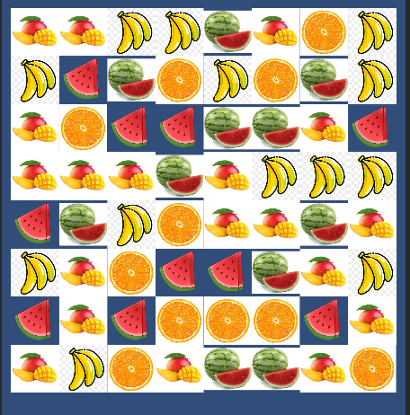
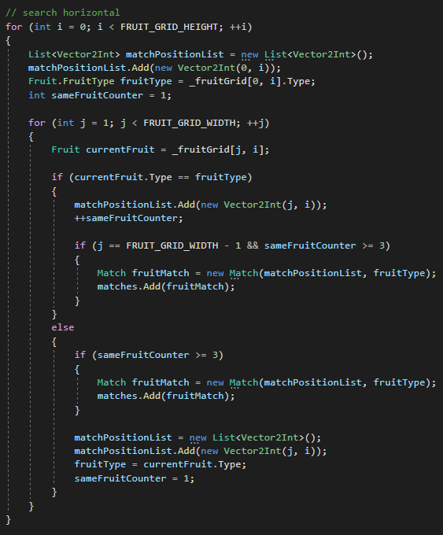
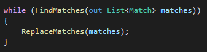
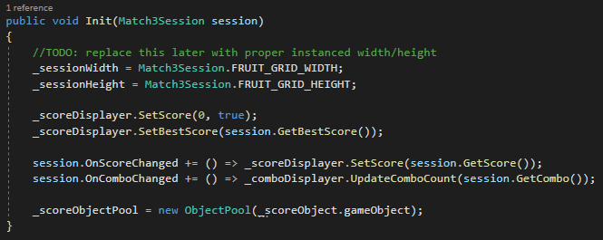
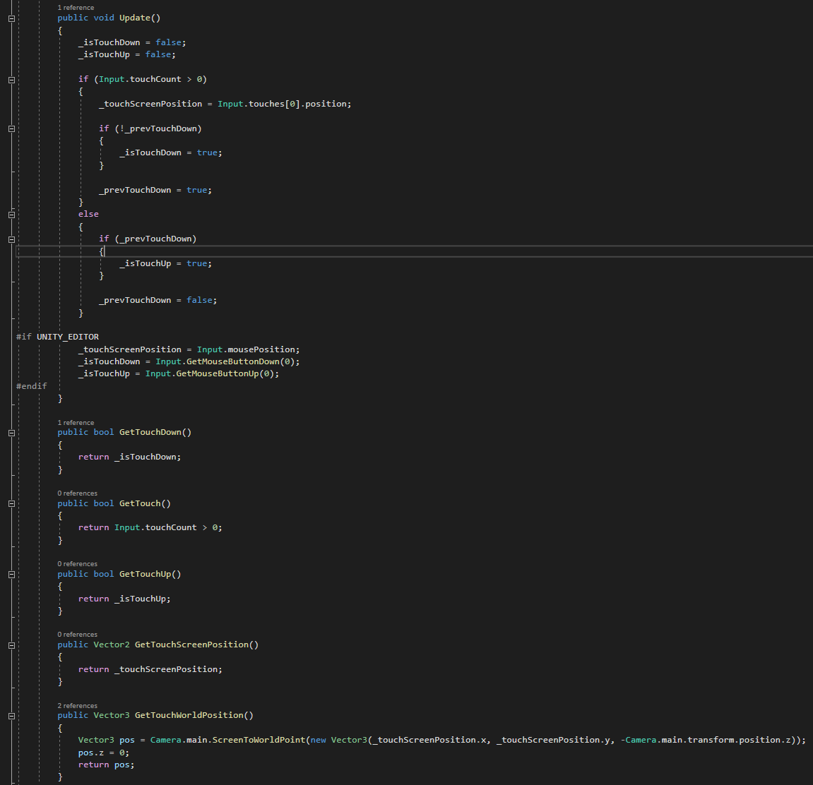
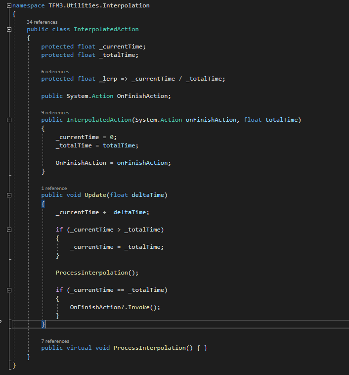
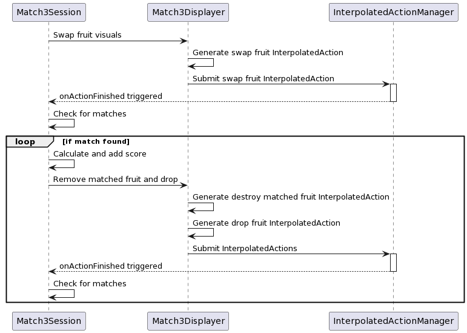

I was always curious about how simple or complex making a match 3 could be. In theory, you have an array of items, give the player the ability to switch two of them, and then check whether or not that switch resulted in any matches.
But how do you make it visually responsive? How do you give it that "Candy Crush" sort of polish? How do you create an architecture that separates the model from the view, the mechanics from the visuals? How do you potentially support different mechanics?
I sought to answer these questions and challenge myself across a weekend of development.
I started off by using placeholder art to generate random fruit in a 2D array. Immediately, I ran into an issue where there were already matches in the generated array. To address this, I had to change certain fruit after the initial generation so that those matches wouldn't exist. This meant that I had to make the matching algorithm first.
To do this, I created a naive horizontal and vertical match check. It did not seem that the matching algorithm needed anything more complex. Given an 8x8 board, the algorithm would only need to parse 64 items twice, once for horizontal and once for vertical.
Once the matches were found, a fruit would be chosen in each matching sequence and replaced with a different one. Then, matches would be check again, creatin a loop until there were no matches to be found. This created a small but elegant code block.
But how do we handle the visuals of the game? Putting the whole game in one class would reduce the readability and reusability of the game. I decided to make a Match3Displayer and a Match3Session class. The Match3Session would take care of the board data and determine actions through an input, and the Match3Displayer would take care of all of the object transformations, the particle effects, and other visuals. When the starting board state is calculated and all the generated matches have been dealt with, the Match3Session is then sent over to the Match3Displayer to render. This allows the Displayer to hook up its callbacks when data changes in the Session as well.
Next, we have to consider the user's input. I decided to make a wrapper for the Input class that would consolidate functions but would use the mouse to control in editor and touch on the phone. In hindsight, this was an opportunity to use Unity's Input System, but that is a project for another time.
Now that the input has been set up, I needed to make the swapping functionality. This required a sequence of actions:
This created several issues. For one, I needed to make sure not only that these actions happened in sequence. I also had to ensure that they were timed in a way that felt good to play. Lastly, I needed to make sure that spawning so many fruit at once wouldn't lag the game.
To address both the sequencing and the timing issues, I decided to make a class called an InterpolatedAction.
This class was used all sorts of visual sequences, since it acts as both an interpolator and can be chained using the Action parameter. For example, in the case of a swap, an InterpolatedAction would lerp the positions of the two fruit being swapped. When the swap is visually finished, it would then calculate the matches.
The InterpolatedActionManager was created to handle all of the InterpolatedActions in one Update() sequence. To access the InterpolatedActionManager, the Game class was then created. This Game class would not only hold the InterpolatedActionManager, but would also host inputs, vibrations, sound effects, and global settings so that all classes had access to these values. It would update all of these classes in sequence, preventing any issues from a lack of one.
From there, polish was then hurriedly added to the game before the weekend was over. Commercially free to use assets were added, and the fruits were drawn by a coworker of mine. Sound effects and music were added, and the InterpolatedAction was extended with custom functions to control the lerp value (such as smoothstep). Global settings were created, and the player's score was saved on exit as a high score. A banner ad was included as well, at the very bottom of the screen. While development stopped at the end of the weekend, it would still take some time for the game to come out on the Google Play Store.
There is much to improve in the game. Design ideas can be added, such as fruit collapsing into a super fruit a la Candy Crush Saga. The Fruit class and virtual functions exist to expand into that feature, but again it may be a project for another time. More visual polish can be added as well. There could be animated animals moving about, and the beach waves could use a visual overhaul.
All in all though, I believe I did a pretty good job for a weekend of work.